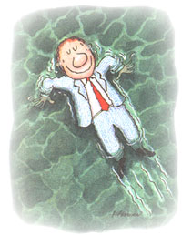

Do you ever get that sinking feeling?
Long before I knew how to swim I knew how to float-and it's just as well. Wouldn't be here otherwise. I was a Floater Supreme, although I admit that sounds like a weird concoction dreamed up by an old-fashioned soda fountain in the hinterlands of America.
When I was about six months old (I do not, of course, remember this but it became part of oft-repeated Chapin folklore), my dear mother, tired of carrying me, settled me down on a big smooth rock that overlooked a quiet stretch of Otter Creek near Pittsford, Vermont.
While she was contemplating the view, I suddenly started to roll, and rolled right into Otter Creek. I floated downstream quietly and confidently, face up. Apparently unnerved after a minute or so, though, I began to squall, shattering the peaceful summer day. My mother couldn't swim ...not a stroke. Faced with the prospect of a water-logged baby, she showed great presence of mind. She found a long pole, reached out with it, and gently guided me to shore, where she fished me out and dried me off.
The maternal instinct can do anything.
A few years later my dad was lucky enough to get a job in the Tropics, giving me an unbeatable opportunity to learn how to swim. I honed those swimming skills at age eight by going to Pera Beach on the eastern tip of Jamaica. Employing a choppy crawl, I headed straight for the coral reef and kept going until spoilsport grown-ups overtook me and hauled me back, suggesting all the while that if I'd been allowed to swim 10 feet farther the barracudas would have got me.
Ever since, I have had a matchless swimming record, as I will now proceed to demonstrate.
We lived in Jamaica only two years. My father's job didn't last. Back in Vermont, on Bushwillie Farm, I swam in the nearby East Pittsford Dam. We didn't have barracudas. We had perch. I also swam in the Rutland Municipal Pool where
I became what I think was called a "Junior Lifeguard." I do recall that my swimming trunks bore a Red Cross patch, which I flaunted. I was on my way.
Then we moved to Montreal. The family odyssey again. I was 13 and eager to get wet. Montreal West High School had no pool, so I joined the downtown Montreal Athletic Association, which had an excellent pool. I went there, by streetcar, twice a week. The MAA also had Bobby Rose, a pleasant, charitable man who had once coached the Canadian Olympic Swimming Team.
It took Mr. Rose no time at all to recognize my talents, so when the MAA 16-and-under swimming meet was scheduled, he chose me as a participant. The meet was similar to those "annual school plays" attended by scads of doting parents and nobody else.
Mr. Rose put me in the 50-yard sprint. I was in the first of three heats. My mother and father were in the front row. Boy, was I ever stoked! I dived in, churned full-speed ahead, got to the far end, did a flip-turn, looked up, saw all my opponents going in the other direction, halfway home. I finished dead last. I couldn't believe it, and neither could Mr. Rose. He figured it was a temporary lapse, so he put me in the final anyway. He had that kind of power. I finished last in the final. Mr. Rose, with a peculiar look on his face, entered me in the lowboard diving event. There were only three of us-and I finished third.
An hour or so later, my parents and I drove home. The silence was deafening. My mother and father did not subscribe to the Vince Lombardi philosophy of Win-At-All-Costs, but they must have thought that finishing dead last all day long was a bit on the excessive side.
In the fall of 1940 I got my first newspaper job-on the Rutland (Vermont) Herald. Cub reporter and gofer. I used to meet my parents, on occasion, at a house on Lake Bomoseen, 25 miles west of Rutland. It was owned by close family friends, the Landons. On one memorable afternoon I arrived at the house, said hello to my hosts, and walked out on a rickety wooden pier that extended 30 feet into the lake. For some strange reason, I was wearing my good suit that day-a seersucker, along with my best shirt and a tie. A few feet past the end of the pier I found my mother. She was standing up, most of her submerged.
By this time mother had learned how to swim, but she was very tentative. I mean, next to her I was Johnny Weismuller and Matt Biondi rolled into one. She dog-paddled at the rate of approximately 10 feet per hour, and she never ventured into water that was over her head.
My mother said, "Hi:' I said, "Hi." Then she said, "Oh, Bill! Bill! Help!"
I knew what had happened, of course. She had lost contact with terra firma. And I knew what to do. I jumped. At the top of my majestic flight through the air I heard her shout, "It's OK! It's OK! Go back!" She had regained her footing, and, obviously, she thought I could levitate. I crashed into the water right beside her and heard a muffled "sorry."
Now she's sorry. I should have used a long pole.
|
PHOTO BY RICK KIRKMAN |
 |
|